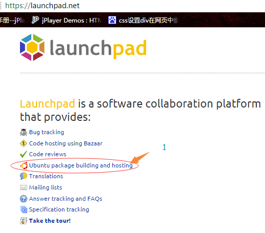
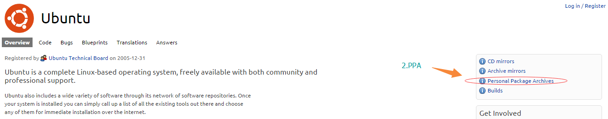
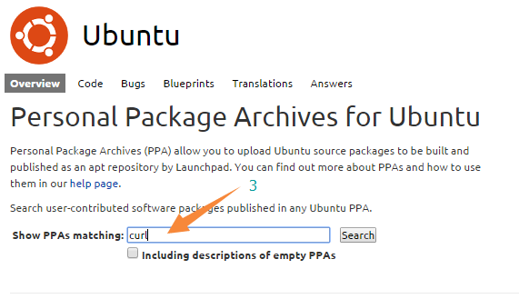
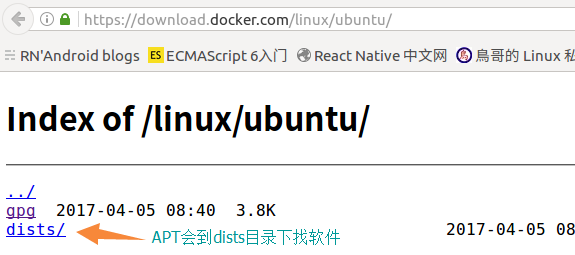

linux下的软件管理
linux界的 2 大主流软件管理方式(命令):RPM(RedHat Package Manager)和DPKG(Debian Packager)。
它们对应的在线(线上)管理方式(命令):YUM(Yellowdog Updater, Modified)和APT(Advanced Packaging Tool)。
| distribution代表 | 软件管理机制 | local安装指令 | online安装指令 |
|---|---|---|---|
| Red Hat/Fedora | RPM | rpm | yum |
| Debian/Ubuntu | DPKG | dpkg | apt |
软件安装依赖
rpm、dpkg安装包里面含有，安装软件所需要的依赖软件列表资料，linux有与之相对应的资料库。当安装软件的时候，rpm、dpkg会根据自身包里面的资料
去查询linux资料库判断依赖软件是否满足，若满足予以安装，若不满足则不予以安装。
那么安装的时候就将软件的相关信息，写入linux资料库，以便未来的查询、验证和反安装。
这种安装方式，需要手动解决依赖，也就是我们需要频繁的一次次下载、安装依赖软件！
有没有什么方式可以解决？
yum/apt 在线安装
通过yum/apt可以很好的自动化的解决软件之间的依赖关系。透过yum会去yum服务器上自动下载、安装依赖的软件。
linux的rpm资料库路径为:/var/lib/rpm/,未來如果我们有任何软件升級的需求，
版本之间的比较就是来自于这个资料库， 而如果你想要查询系统已经安装的软件，也是从这里查询的！
linux的dpkg资料库路径为:/var/lib/apt/
centos使用yum安装nodejs环境
通常情况下默认的yum资料库(repo)并不包含有些类型的软件，需要手动添加epel源
# yum info 命令查看系统是否安装了epel包
yum info epel-release
# 安装nodejs
curl -sL https://rpm.nodesource.com/setup_6.x | bash -
sudo yum install -y nodejs
# 倘若上面执行curl -sL https://rpm.nodesource.com/setup_6.x | bash - 命令报错，需要切换到root用户
su -
或
sudo su -
centos使用官方二进制数据包安装
使用curl命令下载官方二进制压缩包
# 参数大写的-O/--remote-name表示，把输出写到该文件中，使用远程文件名
curl -O https://nodejs.org/dist/v6.11.5/node-v6.11.5-linux-x64.tar.xz
# 区别与-o参数
curl -o [文件名] https://nodejs.org/dist/v6.11.5/node-v6.11.5-linux-x64.tar.xz
# 由于上述文件使用的xz压缩，所以首先要使用xz命令解压缩
xz node-v6.11.5-linux-x64.tar.xz
# 解包
tar -xvf node-v6.11.5-linux-x64.tar
#将node程序移动到/usr/local目录
mv node-v6.11.5-linux-x64 /usr/local/
# 设置node执行文件环境变量
vim ~/.bashrc
export NODE_HOME='/usr/local/node-v6.11.5-linux-x64'
export PATH=${NODE_HOME}/bin:${PATH}
# 为man page添加映射路径
sudo vim /etc/man.config
# 添加以下数据
MANPATH_MAP /usr/local/node-v6.11.5-linux-x64/bin /usr/local/node-v6.11.5-linux-x64/share/man
apt、apt-get、apt-cache(在线命令)
apt是apt-get和apt-cache的简单联合。以前需要apt-get、apt-cache组合使用的常规命令，现在只需要apt一个命令就可以解决了。
apt server的repository配置
apt使用的服务器或镜像站点，通过以下配置文件进行配置：
/etc/apt/sources.list
文件中的各项信息，通常以以下形式列出:
deb http://host/debian distribution section1 section2 section3 deb-src http://host/debian distribution section1 section2 section3
# See sources.list(5) for more information, especially
# Remember that you can only use http, ftp or file URIs
# CDROMs are managed through the apt-cdrom tool.
deb http://http.us.debian.org/debian stable main contrib non-free
deb http://non-us.debian.org/debian-non-US stable/non-US main contrib non-free
deb http://security.debian.org stable/updates main contrib non-free
# Uncomment if you want the apt-get source function to work
#deb-src http://http.us.debian.org/debian stable main contrib non-free
#deb-src http://non-us.debian.org/debian-non-US stable/non-US main contrib non-free
- 目录中包含的是二进制软件包(deb)
- 目录中包含的是源码包(deb-src)
PPA(Personal Package Archives)个人软件包档案
由于某些原因很多安装包不能进入Ubuntu官方的软件包仓库。为了方便用户使用便提供了PPA，允许用户建立自己的软件仓库，上传软件。
PPA:A Personal Package Archive (PPA) is a software repository for uploading source packages to be built and published as an Advanced Packaging Tool repository by Launchpad.
可以在https://launchpad.net/ubuntu/+ppas搜索需要的软件，并安装。如图所示：
  
# systec:所有者(作者、组织),curl-7.35-trusty:库名称
sudo add-apt-repository ppa:systec/curl-7.35-trusty
sudo apt-get update
删除已添加的PPAs
- 仅删除"sources.list.d/*.list"文件内容
sudo add-apt-repository --remove ppa:systec/curl-7.35-trusty
# 下面的命令等价
sudo apt-add-repository --remove ppa:system/curl-7.35-trusty
- (推荐)在
/etc/apt/sources.list.ddirectory下面找到需删除PPA配置，并删除。
sudo rm /etc/apt/sources.list.d/xxxx.list*
- 通过Software Sources(软件中心)->软件与更新，删除已添加的软件包
添加Ubuntu官方(full url)软件仓库：
# $(lsb_release -cs)获取系统版本(开发代号)
# 添加apt server repository
sudo add-apt-repository \
"deb [arch=amd64] https://download.docker.com/linux/ubuntu \
$(lsb_release -cs) \
stable"
# 删除repository与vim /etc/apt/sources.list 删除相应行等同
sudo apt-add-repository --remove \
"deb [arch=amd64] https://download.docker.com/linux/ubuntu \
$(lsb_release -cs) \
stable"
直接访问下https://download.docker.com/linux/ubuntu会发现目录地下有个dists目录，apt默认会到此目录地下寻找软件安装包。

进入dists/目录，就有对应的系统版本号(distribution)：trusty/、xenial/、yakkety/
在进入xenial/目录，有对应的节点(section):edge/、pool/、stable/、test/
apt search packagename(搜索apt服务器上指定名称的包)
apt search curl #列出当前apt server或镜像站点里面的包信息
apt list #列出apt server上所有的包
apt list curl
apt -y install packagename(从apt server上下载并安装指定包)
apt -y install curl
apt的软件群组功能MetaPackages
Ubuntu使用MetaPackages提供了跟RedHat的yum grouplist相似的功能，软件包群组！
https://help.ubuntu.com/community/MetaPackages
dpkg 本地计算机包管理
使用dpkg命令可以有效的管理包。安装、更新、卸载、查询包。
dpkg -l packagename 列出本机是否已经安装了指定的包
dpkg -l curl
# 删除所有状态为rc的软件及配置文件
# r: the package is marked for removal.
# c: the configuration files are currently present in the system.
dpkg -l | grep ^rc | awk 'print $2' | xargs sudo dpkg --purge
参考
- Yum（Yellow dog Updater, Modified）由Duke University团队，修改Yellow Dog Linux的Yellow Dog Updater开发而成，是一个基于RPM包管理的字符前端软件包管理器。能够从指定的服务器自动下载RPM包并且安装，可以处理依赖性关系，并且一次安装所有依赖的软件包，无须繁琐地一次次下载、安装。被Yellow Dog Linux本身，以及Fedora、Red Hat Enterprise Linux采用。【摘自《维基百科》】
- DPKG维基百科